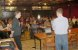
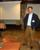
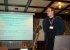
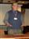
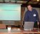
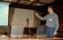
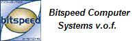
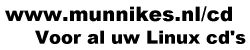
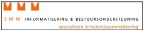

NL.OpenOffice.org-gebruikersdagLaatst aangepast 15 december
2003
Zaterdag 13 december 2003 werd in Tilburg de
eerste NL.OpenOffice.org-gebruikersdag gehouden. Ruim 70 leden van de
Nederlandstalig OpenOffice gemeenschap, geïnteresseerden en sponsors
ontmoeten elkaar in Tilburg. De bezoekers waren afkomstig van het gehele
Nederlandstalige taalgebied van Vlieland en Hoofddorp en Brugge.
De belangrijkste
doelstelling van namenlijk om leden van de NL.OpenOffice.org-gemeenschap
met elkaar kennis te laten maken is ruimschoots gehaald. In de meeste
gevallen kenden de leden elkaar alleen van de diverse mailinglists. Door
middel van voordrachten en presentaties werden de aanwezigen op de hoogte
gebracht van de laatste stand van zaken binnen het OpenOffice.org project.
Ontvangst
(Arthur Buijs, Luc Castermans)
Het officiële begin
was bijna 45 minuten later dan gepland. Volgens de Luc was dat te
verklaren door het Brabants, het Fries en het Vlaams kwartiertje bij
elkaar op te tellen. Deze verlate start hield echter wel in dat nog
voor aanvang van de gebruikersdag de agenda helemaal omgegooid werd.
|
 |
nl.OpenOffice.org-project
(René Klomp - Sun Microsystems)
Als eerste kwam
René Klomp aan het woord namens Sun Microsystems. Hij gaf uitleg over
de filosofie van Sun met betrekking tot OpenOffice.org en gaf uitleg
over de verschillen tussen Staroffice en OpenOffice.org. |
 |
Spellingcontrole
(Simon Brouwer - projectleider)
Er werd uitgebreid
stilgestaan bij de spellingscontrole door Simon Brouwer. Hij legde
uit hoe dit zich op dit moment aan het ontwikkelen is. Daarbij
werd gekeken naar de manier waarop spellingsregels nu door
OpenOffice.org gebruikt worden in het Nederlands en wat er nog
verbeterd moet worden. Een uitdaging is het om de spellingcontrole
samengestelde woorden te laten herkennen, vanwege het oneindige
aantal variaties. Vanuit de zaal kwamen meerdere suggesties om te
zien of het mogelijk was om bijvoorbeeld instituten, universiteiten
op het gebied van de Nederlandse taal hierbij te betrekken. |
 |
Project:
Synoniemenlijst (Reginald Ricquier)
Reginald
Ricquier wil een project opstarten om een Nederlandstalige
synoniemenlijst op te bouwen. Hij zoekt een een aantal personen die
dit samen met hem willen uitvoeren, die zich uiteraard bij hem
kunnen melden. De eerste versie van deze lijst wil Reginald pas naar
buiten brengen als hij minimaal 5000 woorden bevat. Tijdens deze
presentatie werd vanuit de zaal ook de vraag gesteld of het dan niet
mogelijk was om meteen een antoniemenlijst te maken. |
 |
Localisatie
Helpteksten (Bert Meersma)
Bert Meersma over de
complexiteit van het omzetten van de helpteksten van OpenOffice.org
naar het Nederlands. Om dit te doen zijn verschillende
hulpgereedschappen gemaakt dit de XML-bestanden uit elkaar rafelen,
zodanig dat de vertaling redelijk makkelijk is uit te voeren, en
vervolgens weer de XML-bestanden terug bouwen. De helpteksten zijn
gereed en zullen vermoedelijk dit weekend beschikbaar komen. Jammer
genoeg is het zo dat de structuur van de helpbestanden in OpenOffice.org
2.0 anders zal zijn. |
 |
Implementatie
OpenOffice.org (Jef Peeraer)
Als laatste gaf Jef
Peeraer een enthousiasmerende presentatie over hoe binnen een
bedrijf waar hij voor werkt OpenOffice.org is geÏmplementeerd. Het
betrof de implementatie van een thin-client systeem, waarbij de
server bestaat uit een standaard Linux systeem, met daarop LTSP software. Hij had een systeem
bestaande uit een server en twee thin-clients meegebracht om een en
ander te demonstreren. De reacties van zijn klanten op de nieuwe
software, waren herkenbaar voor de zaal en gaven aanleiding tot enig
gelach. |

|
InloopmiddagNa afloop van de presentaties, was er gelukkig,
eindelijk tijd om wat te eten. Sun Microsystems had het op zich genomen om
de lunch te betalen.
Hierna begon het middaggedeelte, het was toen
al bijna 14:30. De meeste deelnemers hadden zich ingeschreven voor de hele
dag want tijdens de vrije inloop zijn er niet veel extra mensen meer
geweest.
Er was een netwerk opgebouwd waarop in totaal 14
computers aangesloten waren. Er werd uitgebreid OpenOffice.org
gedemonstreerd, en met dank aan aanwezigen werden OpenOffice.org CD's
gebrand. Ter gelegenheid van de gebruikersdag werd de officiële nl.openoffice.org CD-ROM
uitgebracht, met daarop de vrijwel voltooide vertaling van de
Helpbestanden, en de nieuw vertaalde cursushandleiding Calc. Voor de
mensen die mis grepen: de CD's zijn te bestellen bij KoopLinux en Munnikes.
Naast de mensen die een
presentatie verzorgden was er nog uitgever aanwezig die boeken bij zich
had over onder andere OpenOffice.org. Ook het bedrijf 3MM was aanwezig dat
zich bezig houd met onder andere het ontwikkelen van huisstijlen voor
instellingen en bedrijven. Dit werd gedemonstreerd aan de hand van
zelfgemaakte StarBasic macros.
Ook heeft tijdens het middag
gedeelte heeft Reinout van Schouwen voor enkele geïnteresseerden een
voordracht gegeven over Software
patenten. Een zeer belangrijk thema als het om open source software
gaat.
Een aantal mensen heeft tevens de OpenOffice.org animatie
gemaakt door VAIPS kunnen bewonderen. VAIPS heeft de animatie gemaakt met
de bedoeling de naamsbekendheid van OpenOffice.org te bevorderen. Het is
de bedoeling de animatie nog verder te ontwikkelen waarna het zodanig
gecomprimeerd wordt de het makkelijk te distribueren is. Hopelijk wordt
de animatie snel verspreid.
MailinglijstWie op de hoogte wil blijven van de ontwikkelingen
rond OpenOffice.org kan zich aanmelden op de Discussie lijst. Op deze
lijst kun je met ons en andere leden van gedachten wisselen over
OpenOffice.org.
PersHet BrabantsDagblad berichtte over
ons.
Broncode van de presentaties
De gebruikersdag werd mogelijk gemaakt door:

 
Open Office is binnen de Benelux een beschermde merknaam van het
Nederlandse bedrijf Open Office.
|
|
|
{kind=link}
{kind=link}
{kind=link}
{kind=link}
{kind=link}
{kind=link}
{kind=link}
{kind=link}
{kind=link}
{kind=link}
{kind=link}